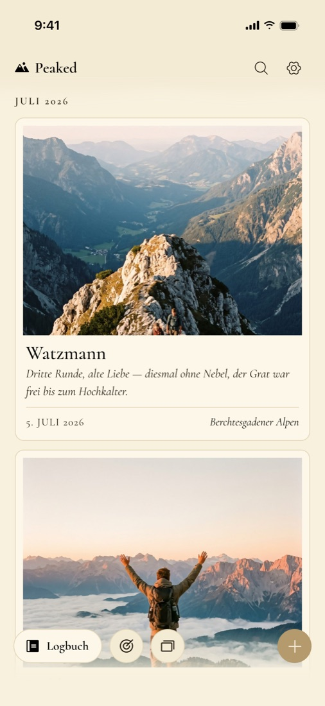
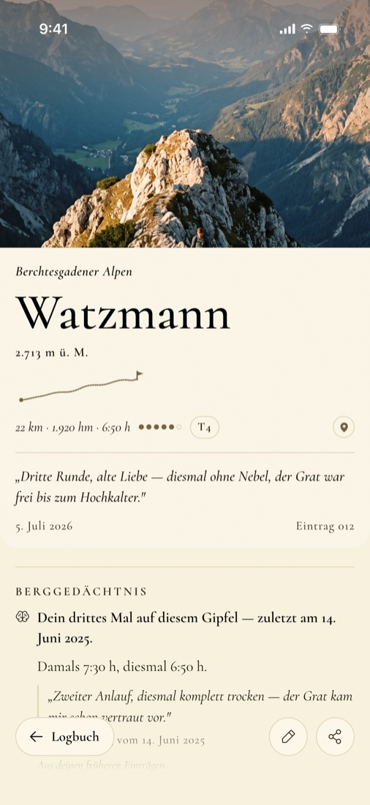
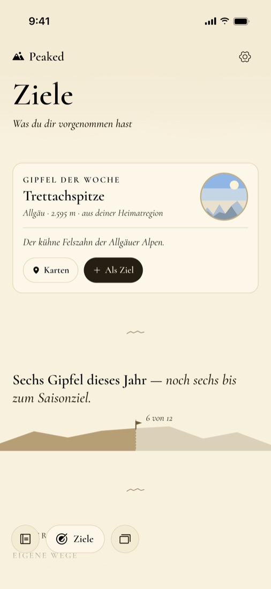
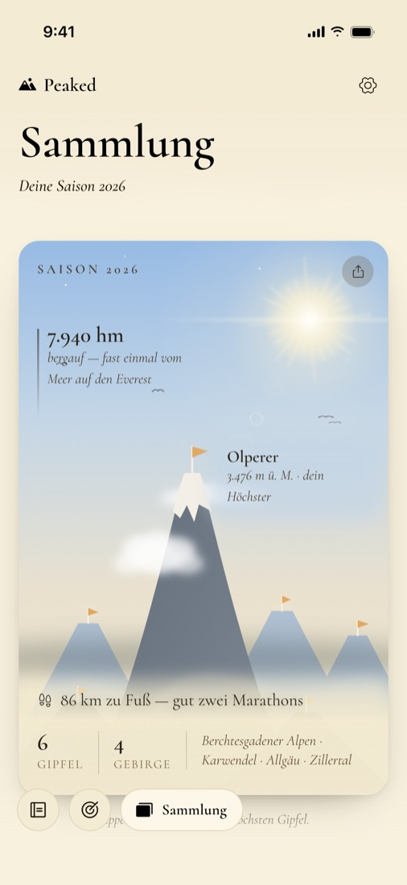

Peaked, dein Bergtagebuch.
Für die Zeit nach der Tour: Halte Gipfel, Wege, Fotos und die kleinen Geschichten fest, die sonst zwischen Kamerarolle und Erinnerung verschwinden.
- Preis
- 4,99 € einmalig
- Abo, Werbung
- keins, keine
- Konto
- keins nötig
- Geräte
- iPhone und Android
- Stand
- bald im App Store und bei Google Play

So sieht Peaked aus.
Kein Leistungsdashboard, sondern eine ruhige, handwerklich gestaltete Seite, zu der du gern zurückkommst.
-
Logbuch
Jede Tour wird ein Polaroid: Foto, Bergname, eine Zeile zum Tag.
-

Die Seite zur Tour
Foto, Routen-Unterschrift und deine Worte. Das Berggedächtnis weiß, wann du schon oben warst.
-

Ziele
Gipfellisten für Allgäu, Karwendel, Dolomiten und mehr, dazu ein Saisonziel und jede Woche ein Gipfel aus deiner Region.
-

Sammlung
Deine Saison als Poster, Abzeichen aus deinen eigenen Touren und ein Rückblick aufs Jahr.
Was Peaked kann.
Alles, was in deinem Bergbuch steht, entsteht auf deinem Handy. Peaked braucht keinen Login und betreibt keinen Server.
Touren festhalten
Datum, Höhenmeter, Strecke, Dauer, Schwierigkeit und deine Notizen, wann immer du willst. Ältere Gipfel trägst du mit Name und Jahr nach.
GPX-Spur einlesen
Importiere eine GPX-Datei, dann liest Peaked Berg, Route und Zahlen selbst heraus.
Teilen, wenn du willst
Eine Tour oder deine Saison als gestaltetes Druckblatt, erzeugt auf dem Gerät.
Ohne Netz
Das Tagebuch funktioniert offline. Nur eine bewusst geöffnete Karte lädt Kartenbilder, und das Diktat nutzt die Spracherkennung deines Geräts.
Deine Sicherung gehört dir
Eine Peaked-Datei, die du über das Teilen-Menü an einen Ort deiner Wahl gibst. Dazu auf Wunsch eine automatische Sicherung auf dem Gerät.
Ein Kauf, alles drin
Keine Werbung, kein Abo, keine In-App-Käufe und keine gesperrten Funktionen.
Peaked plant nicht den nächsten Berg. Es bewahrt den, auf dem du schon warst.